Contenuto locale
Post Markdown, metadati, immagini e site.toml restano sul tuo computer.
Admin locale per siti statici
Scrivi contenuti Markdown, gestisci piu siti locali, genera HTML statico e pubblica solo quando sei pronto.
Beta warning
Usa Styxpress con cautela. Una configurazione errata puo sovrascrivere file nel
publicDir. Se abiliti il deploy SFTP, la cartella remota configurata
diventa gestita da Styxpress: il deploy puo modificare o rimuovere file remoti.
Fai backup e prova prima su cartelle e server non critici.
Download
L'installer automatico supporta Linux e macOS su amd64 e
arm64. Scarica l'asset della GitHub Release, verifica
SHA256SUMS, installa un binario versionato in
~/.local/bin e crea il comando stabile
styxpress-admin.
curl -fsSL https://raw.githubusercontent.com/nordine-abde/styxpress/main/scripts/install-styxpress-admin.sh | bashcurl -fsSL https://raw.githubusercontent.com/nordine-abde/styxpress/main/scripts/install-styxpress-admin.sh | bash -s -- --version v0.0.1-beta.1Avvio
Di default l'admin ascolta su 127.0.0.1:0, quindi sceglie una
porta locale libera e la stampa nel terminale insieme al token di sessione.
Usa -addr solo se vuoi fissare una porta.
styxpress-adminstyxpress-admin -addr 127.0.0.1:8080styxpress-admin -config /path/to/config.tomlFeature
Styxpress non serve il sito pubblico: genera file statici. La directory
publicDir puo essere servita da Caddy, Nginx o qualsiasi server statico.
Post Markdown, metadati, immagini e site.toml restano sul tuo computer.
Crea e apri piu siti locali senza gestire manualmente file config separati.
Scrivi in modalita visuale oppure modifica direttamente il Markdown grezzo.
Genera HTML, feed RSS, sitemap, favicon, stylesheet e pagine dei post.
Carica cover e immagini locali, poi inseriscile nel corpo del post.
Sincronizza manualmente il publicDir verso una cartella remota gestita.
Guida all'uso
Questi passaggi sono stati eseguiti in un workspace temporaneo. Gli screenshot mostrano l'app reale: avvio, token, creazione sito, configurazione, post, editor Compose, Markdown e output pubblico statico.
Esegui styxpress-admin. Il terminale stampa l'URL locale e
il token di sessione. Apri l'URL, incolla il token in
Session token e premi Set. Se riavvii
il server, usa il nuovo token.
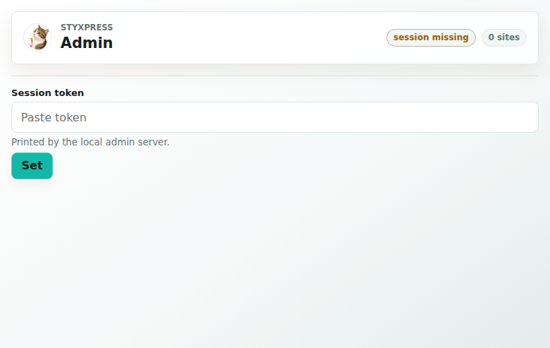
Dopo il token, Styxpress mostra il registro dei siti. Da qui puoi creare
un nuovo sito o aprirne uno esistente. In modalita -config
esplicita la creazione e la cancellazione dei siti non sono disponibili.
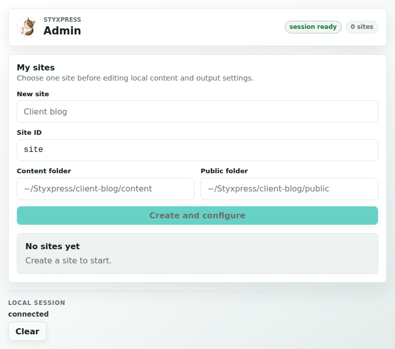
Inserisci il nome. L'app propone un Site ID normalizzato
e cartelle predefinite sotto ~/Styxpress/<site-id>/.
Puoi modificare Content folder e Public folder
prima di premere Create and configure.
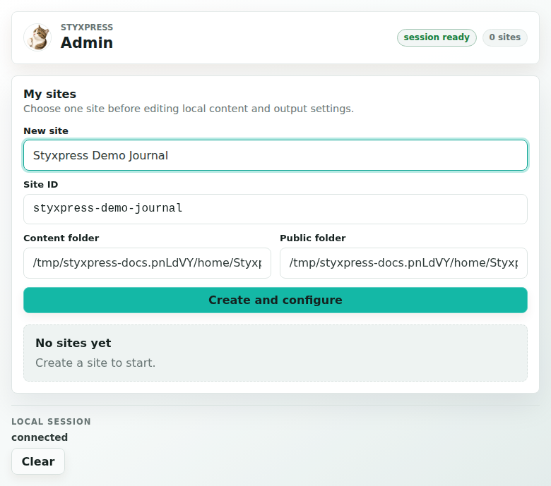
contentDir contiene sorgenti, Markdown, metadati, media e
site.toml. publicDir contiene HTML, feed,
sitemap, stylesheet e asset generati. Mantieni sempre queste directory
separate.
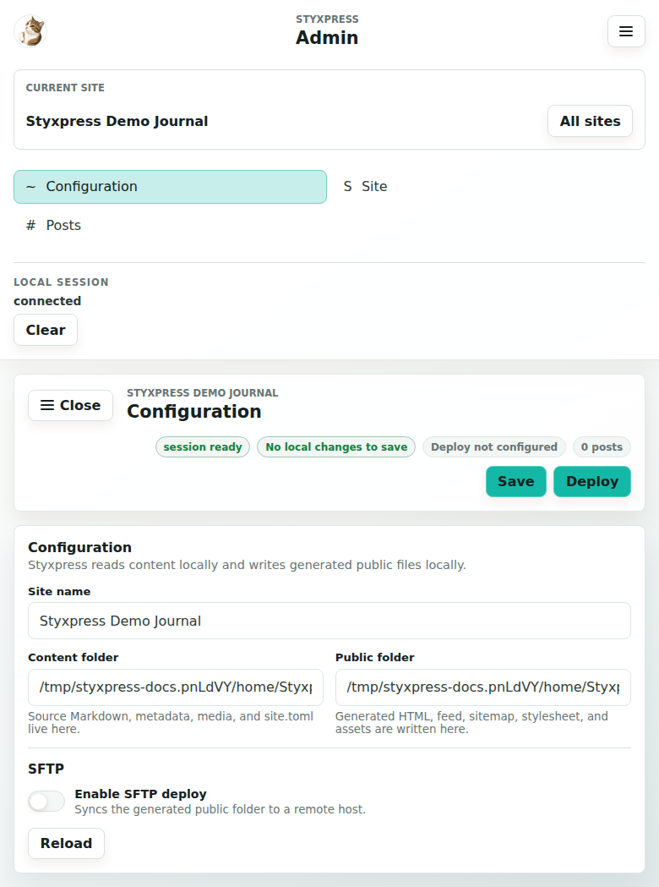
Attivando SFTP compaiono host, porta, utente, cartella remota, chiave e
known hosts. La cartella remota diventa gestita da Styxpress: il deploy
sovrascrive file corrispondenti e rimuove file remoti non presenti nel
publicDir.
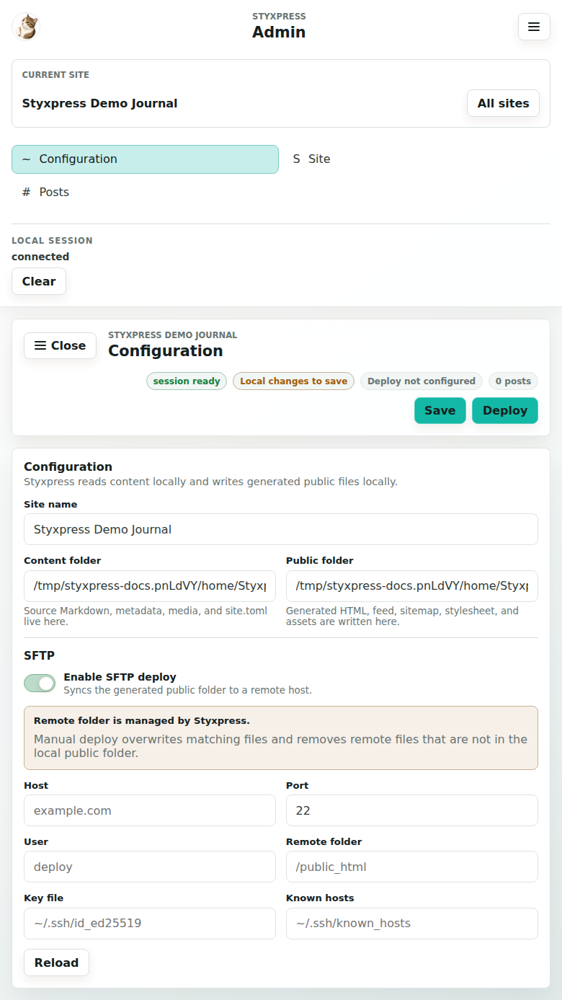
In Site modifica titolo, descrizione, favicon, link di
header, footer e watermark. La preview si aggiorna durante l'editing.
Save scrive site.toml e rigenera il sito.
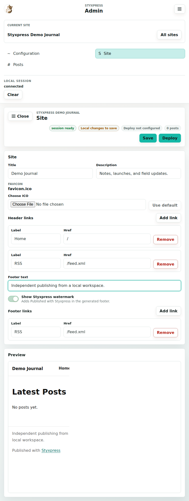
La sezione Posts mostra l'elenco dei post Markdown. Quando entri qui, la sidebar si chiude per lasciare spazio al lavoro; il pulsante Menu la riapre.
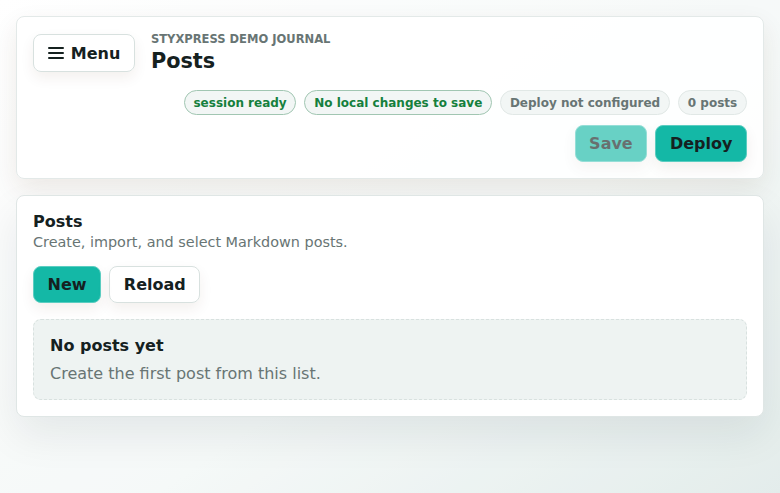
Premi New, inserisci il titolo e controlla lo slug. Lo slug usa lettere minuscole ASCII, numeri e trattini. Premi Save nella barra superiore per creare il post.
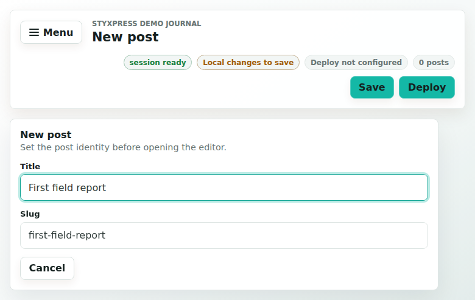
Compose e l'editor visuale. Usa la toolbar per heading,
grassetto, corsivo, liste, citazioni e link. Il contenuto resta Markdown:
quando salvi, viene scritto in content/posts/<slug>/source.md.
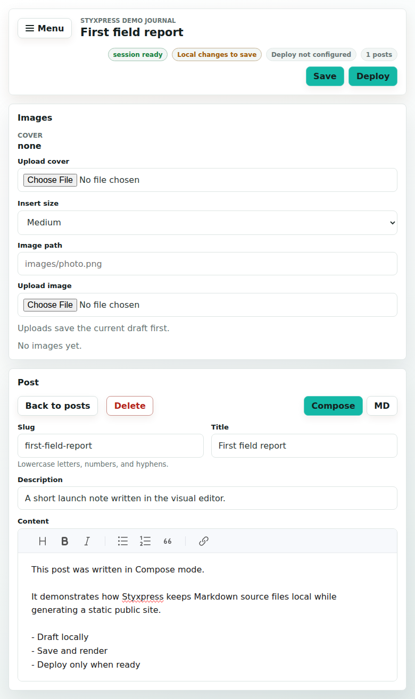
Nel pannello Images puoi caricare cover e asset. Se il
post non e ancora salvato o ha modifiche locali, l'upload salva prima il
draft. Il pulsante Insert aggiunge un riferimento come
assets/foto.png#medium.
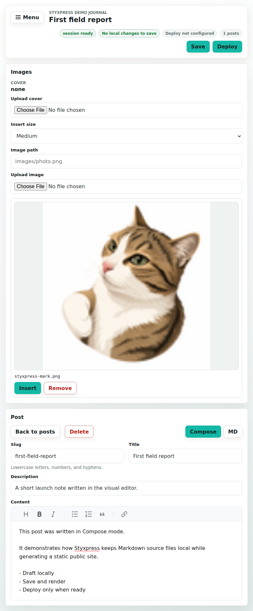
Save salva il post e renderizza la pagina statica nel
publicDir. Il deploy remoto non parte automaticamente:
usa Deploy solo dopo aver salvato le modifiche locali.
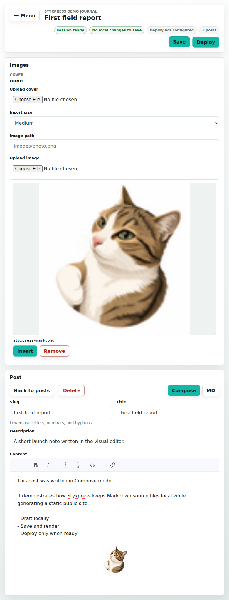
MD mostra il Markdown grezzo in una textarea e abilita Import Markdown. L'import copia il contenuto del file nel post gestito da Styxpress; non mantiene un collegamento al file originale.
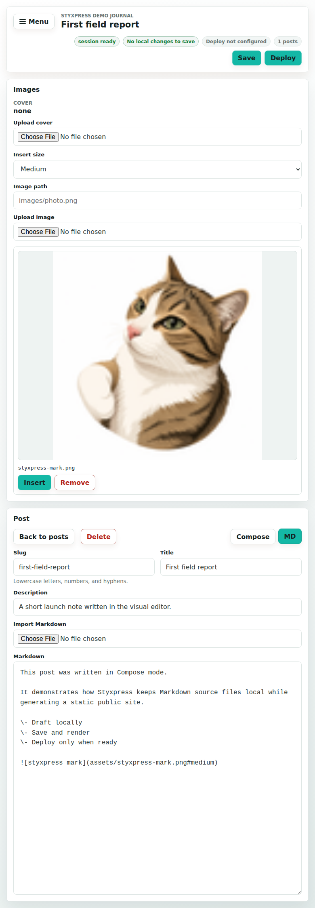
La lista indica titolo, slug, stato draft/published e data. Se ci sono modifiche non salvate, Styxpress chiede conferma prima di lasciare l'editor.
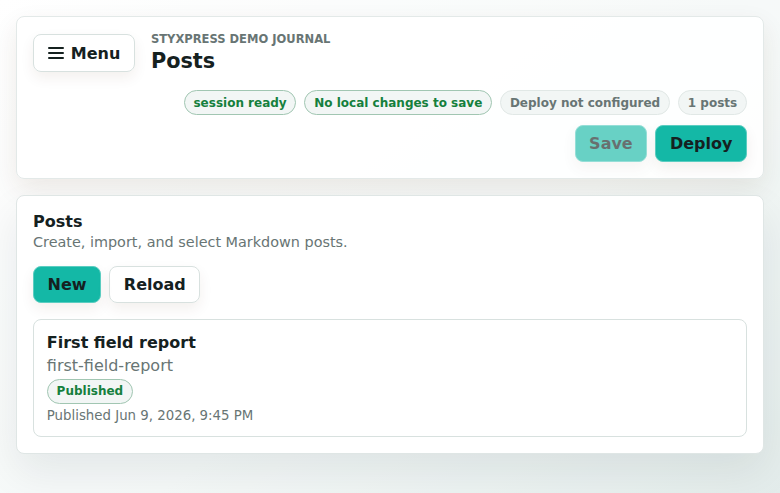
Il sito pubblico e composto da file statici. La home, il feed, la sitemap
e le pagine dei post sono in publicDir. Puoi servirli con
Nginx, Caddy, un hosting statico o una CDN.
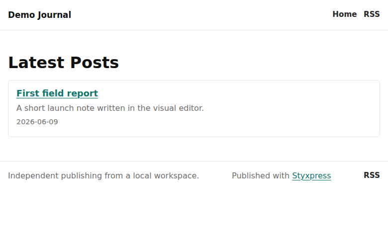
Ogni post pubblicato genera una pagina sotto
public/posts/<slug>/index.html. Non serve il server
admin Go per leggere il sito pubblico.
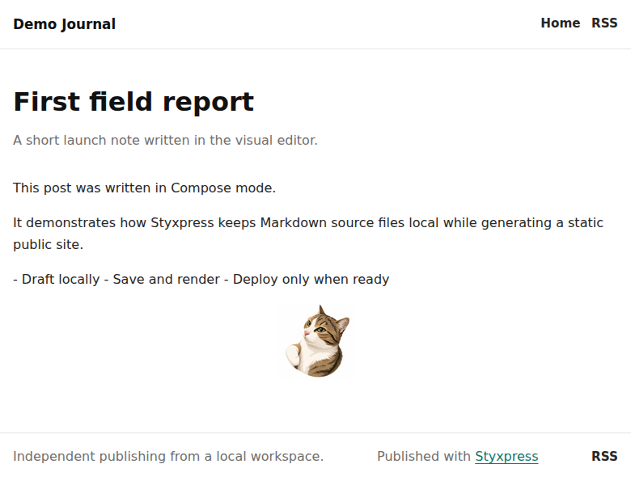
File generati
Questa e la separazione fondamentale: contenuto sorgente in
contentDir, output pubblico in publicDir.
content/
site.toml
assets/
posts/
first-field-report/
source.md
title.txt
description.txt
published_at.txt
updated_at.txt
assets/public/
index.html
feed.xml
sitemap.xml
favicon.ico
assets/
styxpress.css
posts/
first-field-report/
index.htmlNote operative
No. Il binario sceglie una porta libera. Usa -addr 127.0.0.1:8080 se vuoi una porta fissa.
No. E un token di sessione stampato dal server locale. Se riavvii Styxpress, incolla il nuovo token.
Solo quando premi Deploy. Prima salva le modifiche locali con Save.
Le release possono includere asset Windows, ma l'installer automatico e pensato per Linux e macOS.